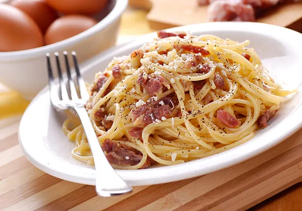

Pasta a la Carbonara
La pasta a la carbonara es un clásico de la cocina italiana. Esta receta requiere ingredientes simples pero de buena calidad.
Para preparar este plato, necesitarás 400g de pasta, 200g de guancial (o panceta), 4 huevos, queso pecorino romano y pimienta negra.
Calienta agua con sal, cuece la pasta hasta que esté al dente. Mientras, corta el guancial en tiras pequeñas y fríelo hasta que esté crujiente. En un recipiente, bate los huevos con el queso rallado y la pimienta.
